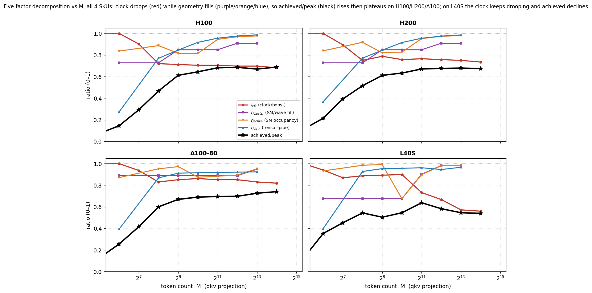

What our LLM inference-time predictor actually is, what the data lets us honestly claim, and where new experiments are still required.
Bracket legend: each answered question is tagged with its category and a status pill.
The two-half reframing is correct, but with one mismatch the data forces us to confront: the second half, as measured, does NOT demonstrate reduced inference time — it is a signal-fidelity and integration study with disclosed negative results.
Partial match. The paper calls it 'a per-step predictor plus a utility study'. 'Pure-input' overstates Half 1 (it needs microbenchmarks + ncu counters per architecture, plus one host-floor scalar per trace in calibrated mode). Half 2 is a utility study where two of four pre-registered claims FAIL; the one real improvement is keep-warm routing (−30 ms TTFT). A separate tier swaps the predictor into four tools, claiming accuracy-at-lower-cost, not speedup.
Half one predicts one served engine step. The classic approach decides the bottleneck per kernel from FLOPs vs bytes and divides by peak rates — needing two numbers a GPU rarely sustains, patched with an unexplained efficiency factor. We replace that factor with a small product of factors, each a concrete thing the GPU does after launch.
No — three is an undercount; the honest structure is ~7 additive terms and 9+ factors. The step time is:
Here $T_{\mathrm{blocks}}$ is the GPU compute body of the step. It expands over the $N_L=32$ layers as:
where $t_{\mathrm{proj}}$ (the four projection GEMMs) and $t_{\mathrm{attn}}$ are per-layer, while $t_{\mathrm{light}}$ carries its own $N_L$. Each operator term in (1a) is itself a roofline max (eq 1c below); its compute branch efficiency is the five-factor model, clock as an explicit first-class factor:
Here $f_{\mathrm{clk}} = f_{\mathrm{sustained}}/f_{\mathrm{boost}}$ is the explicit clock factor, $\eta_{\mathrm{cluster}}$ is SM-fill, $\eta_{\mathrm{active}}$ the time-domain SM-occupancy, $\eta_{\mathrm{duty}}$ the tensor-pipe duty; delivery $\equiv 1$. The clock is its own factor — not absorbed into a fitted ceiling. Beyond compute the step adds a memory branch $\eta_{\mathrm{mem}}$, the attention term (four factors), the launch floor, the overlap leak, and sampling — ~7 terms / 9+ factors, not three.
The five-factor $\eta_c$ of eq (1b) is only the COMPUTE branch. Each per-layer operator term in eq (1a) — the projection GEMMs of $t_{\mathrm{proj}}$ and the attention $t_{\mathrm{attn}}$ — is itself a roofline max. Take $t_{\mathrm{proj}}$ ($t_{\mathrm{attn}}$ has the same structure, §1.9): it sums the four projection GEMMs, each the larger of compute and memory time. For one GEMM: $M$ = new-token rows, $N_{op}\times K_{op}$ = weight-matrix shape, $\mathrm{BP}=2$ bytes, $P_{\mathrm{boost}}$ = datasheet boost FLOP/s, $\mathrm{BW}_{\mathrm{peak}}$ = datasheet HBM bandwidth. $\eta_c$ sets the compute ceiling, $\eta_{\mathrm{mem}}$ the memory ceiling:
At small $M$ (decode) the memory branch wins (full weight read → DRAM-bound); at large $M$ (prefill) compute wins — exactly the AI-vs-ridge regime column in Table A.
The memory branch's $\eta_{\mathrm{mem}}$ is a single number — the fraction of peak HBM bandwidth a memory-bound streaming kernel actually sustains, which is what turns the byte count $B$ into a time:
So it is neither derived from geometry (unlike $\eta_{\mathrm{cluster}}$) nor fitted (unlike $\eta_{\mathrm{duty}}$): it is read DIRECTLY off one hardware counter — Nsight Compute's gpu__dram_throughput.avg.pct_of_peak_sustained_elapsed — at the $M{=}64$ DRAM-bound point. That percentage IS $\eta_{\mathrm{mem}}$, the memory-side analogue of $f_{\mathrm{clk}}$. One constant suffices because a streaming kernel saturates DRAM at a size-independent fraction of peak; only bytes $B$ and datasheet $\mathrm{BW}_{\mathrm{peak}}$ vary. Per-GPU ($M{=}64$ bench): H100 0.755, H200 0.669, L40S 0.884. A100-80 exception: bench 0.509 but engine $M{\le}32$ sustains 0.75 (kernel-dispatch gap) — 0.75 used.
Each factor maps to one specific measurement; only $f_{\mathrm{clk}}$ needs a per-deployment reading.
| Factor | What it measures | Exact source / counter | Formula |
|---|---|---|---|
| $f_{\mathrm{clk}}$ | sustained clock fraction | pynvml SM-clock @20ms ÷ boost; cross-check ncu sm__cycles_elapsed.avg.per_second | $f_{\mathrm{sustained}}/f_{\mathrm{boost}}$ |
| $\eta_{\mathrm{cluster}}$ | SM / wave fill | ncu launch__grid_size, launch__sm_count (or pre-runtime from the tile) | $G/(\lceil G/N_{\mathrm{SM}}\rceil\,N_{\mathrm{SM}})$ |
| $\eta_{\mathrm{active}}$ | SM occupancy (time) | ncu sm__cycles_active.sum, sm__cycles_elapsed.avg, $N_{\mathrm{SM,used}}{=}\min(G,N_{\mathrm{SM}})$ (pinned clock) | $(\texttt{active.sum}/N_{\mathrm{SM,used}})/\texttt{elapsed.avg}$ |
| $\eta_{\mathrm{duty}}$ | tensor-pipe duty | ncu sm__pipe_tensor_cycles_active.avg.pct_of_peak_sustained_active (Hopper) or sm__pipe_tensor_op_hmma_cycles_active... (Ampere/Ada) | counter/100 |
Partially valid. The clock droop is real and large — but from the real-DVFS loop, NOT the pinned ncu pass (which fixes the clock to isolate geometry, so its ratio is an artifact). Natural $f_{\mathrm{clk}}$ ≈ 0.68 (H100, 1350/1980, 32% droop), 0.74 (H200), 0.82 (A100-80), 0.56 (L40S). Under real DVFS H100 qkv tops near 681 TFLOP/s = 0.69 of the 989 spec, and the clock droop is essentially the whole gap (η_noclk near its ceiling at large M).
But 'lower clock makes GEMM slower' (a throughput decline) is FALSE on well-provisioned parts: H100/A100 decline 0.0%, H200 −0.6%, because rising geometric efficiency ($\eta_{\mathrm{noclk}}$ 0.18 to 0.95) masks the clock. Throughput only declines on tight-cap parts (L40S −15.4%, ±0.8 over 3 repeats; Blackwell ~3%, projected). A locked-clock control collapses the L40S decline to 0.0%.
See the companion deep dive for the full treatment. The Clock Is Not a Constant

Every quantity behind the figure, traced to launch geometry: tile from the cuBLAS kernel name; cluster size / max-active from ncu (Hopper only); grid from launch__grid_size; output tiles $=\lceil M/M_t\rceil\lceil N/N_t\rceil$; tiles-per-CTA = output/grid; waves $=\lceil\text{grid}/N_{\mathrm{SM}}\rceil$.
| GPU ($N_{\mathrm{SM}}$) | M | tile $M_t{\times}N_t$ | cluster (CTAs / max-active) | output tiles | grid (CTAs) | tiles/CTA | waves | $\eta_{\mathrm{cluster}}$ | $\eta_{\mathrm{duty}}$ | AI | ridge $\mathrm{AI}^\star$ | regime |
|---|---|---|---|---|---|---|---|---|---|---|---|---|
| H100/H200 (132) | 64 | 64×64 | 8 / 15 | 96 | 96 | 1.0 | 1 | 0.727 | 0.29 / 0.37 | 62 | 295 / 206 | memory |
| H100/H200 (132) | 256 | 128×128 | 4 / 30 | 96 | 96 | 1.0 | 1 | 0.727 | 0.76 / 0.77 | 232 | 295 / 206 | memory / compute |
| H100/H200 (132) | 1024 | 128×128 | 16 / 7 | 384 | 112 | 3.4 | 1 | 0.848 | 0.92 / 0.92 | 723 | 295 / 206 | compute |
| H100/H200 (132) | 4096 | 128×128 | 8 / 15 | 1536 | 120 | 12.8 | 1 | 0.909 | 0.98 / 0.97 | 1536 | 295 / 206 | compute |
| A100-80 (108) | 64 | 64×64 | — | 96 | 96 | 1.0 | 1 | 0.889 | 0.41 | 62 | 156 | memory |
| A100-80 (108) | 256 | 128×128 | — | 96 | 96 | 1.0 | 1 | 0.889 | 0.87 | 232 | 156 | compute |
| A100-80 (108) | 1024 | 256×128 | — | 192 | 192 | 1.0 | 2 | 0.889 | 0.92 | 723 | 156 | compute |
| A100-80 (108) | 4096 | 128×256 | — | 768 | 768 | 1.0 | 8 | 0.889 | 0.92 | 1536 | 156 | compute |
| L40S (142) | 64 | 64×64 | — | 96 | 96 | 1.0 | 1 | 0.676 | 0.40 | 62 | 419 | memory |
| L40S (142) | 256 | 128×128 | — | 96 | 96 | 1.0 | 1 | 0.676 | 0.93 | 232 | 419 | memory |
| L40S (142) | 4096 | 128×128 | — | 1536 | 1536 | 1.0 | 11 | 0.983 | 0.95 | 1536 | 419 | compute |
The intuition "wave full ⇒ constant duty" holds for one-tile-per-CTA kernels, not Hopper: the grid saturates at the cluster cap (~112–120) beyond the knee and does not grow with $M$ — instead each persistent CTA walks tiles-per-CTA = output/grid tiles (1.0→3.4→12.8), amortising its one-time pipeline prologue. Measured duty is well described by $\eta_{\mathrm{duty}} = 1/(1 + 0.31/\text{tiles-per-CTA})$ to 3 decimals. $M$ adds tiles-per-CTA, not CTAs.
| M | grid (CTAs) | output tiles | tiles/CTA | $\eta_{\mathrm{duty}}$ (ncu) | $1/(1{+}0.31/\text{t/CTA})$ |
|---|---|---|---|---|---|
| 256 | 96 | 96 | 1.0 | 0.764 | 0.764 |
| 1024 | 112 | 384 | 3.43 | 0.917 | 0.917 |
| 4096 | 120 | 1536 | 12.8 | 0.975 | 0.976 |
Given the tile + cluster size from the cuBLAS kernel name, what each factor of $\eta_c = f_{\mathrm{clk}}\,\eta_{\mathrm{cluster}}\,\eta_{\mathrm{active}}\,\eta_{\mathrm{duty}}$ is predicted by — four different provenance levels.
| factor | provenance | Ampere/Ada equivalent | accuracy |
|---|---|---|---|
| $\eta_{\mathrm{cluster}}$ | DERIVED — exact integer geometry, no fit | same formula (grid = output tiles) | Δ≈0 |
| $\eta_{\mathrm{active}}$ | DERIVED tail + ~3% MEASURED residual (Hopper) | wave-tail (residual <1%) | m2048: Ampere <1%, Hopper ~3% |
| $\eta_{\mathrm{duty}}$ | two DERIVED terms (min); c FITTED per arch | tiles/CTA≡1 → 1/(1+c) + roofline | compute-bound ~exact; small-M poor |
| $f_{\mathrm{clk}}$ | MEASURED — no predictive model | — | one reading per operating point |
Real, but the mechanism conflates two effects, and the Hopper-dominant one is not a sync stall. $\eta_{\mathrm{smused}}=\min(\text{grid},N_{\mathrm{SM}})/N_{\mathrm{SM}}$; at $M{=}2048$ the grid is 112 of 132 (0.848). cuBLAS uses 16-CTA (4×4) clusters; cudaOccupancyMaxActiveClusters caps co-residence at 7 (ncu launch__cluster_max_active-confirmed), so the persistent grid is 7×16=112 and 20 SMs are dark — GPC packing, not divisibility; a launch-time limit, not a runtime barrier.
On Ampere/Ada there are no clusters; the grid far exceeds SM count, $\eta_{\mathrm{smused}}=1.0$, and the residual is a wave tail (A100 11.1%, L40S 9.9% last-wave idle). At tiny sizes even Hopper has a true last-wave tail (o at $M{=}64$: 72 CTAs, $\eta_{\mathrm{wave}}=0.545$). The model captures both.
First, the premise mislabels them: the cluster-finishing effect is in the SM-fill factor (1.3), not here. The two factors here, defined in equation (3), are orthogonal: $\eta_{\mathrm{active}}$ is a TIME-domain occupancy (load-imbalance / last-wave idle time); $\eta_{\mathrm{duty}}$ is a PIPE-domain duty (the fraction of active cycles the tensor pipe is issuing).
How obtained: both from pinned-clock (--clock-control base) Nsight Compute counters — $\eta_{\mathrm{active}}$ = (sm__cycles_active.sum ÷ sm__cycles_elapsed.avg), $\eta_{\mathrm{duty}}$ = sm__pipe_tensor_cycles_active.avg.pct.../100 (H200 qkv M=2048: 0.95, 0.955). To estimate: $\eta_{\mathrm{cluster}}$ is pure-parameter from the grid; $\eta_{\mathrm{duty}}$ saturates to a per-generation constant at large $M$; only $f_{\mathrm{clk}}$ needs a per-deployment reading.
They multiply to the single proposed quantity, but staying split is correct — different physics and shape-dependence. At $M{=}2048$: H100 0.946/0.955, A100 0.883/0.918, L40S 0.898/0.962. $\eta_{\mathrm{active}}$ falls from many-wave tails (A100 runs 4 waves); $\eta_{\mathrm{duty}}$ falls from pipe stalls. For transfer the model folds $\eta_{\mathrm{active}}$ into the residual but keeps $\eta_{\mathrm{duty}}$ separate. Arithmetically one suffices; diagnostically and for transfer, two are needed.
It is a bytes-moved correction, the dual of the compute α: compute α derates the peak rate; L2 reuse derates the effective bytes charged. Cold profiling charges DRAM traffic warm execution never moves — cold/warm DRAM-read ratio for attention at 512 tokens is 73.5x (H100), 147x (H200), 246x (A100-80); collapses to ~1–2x at 2048 tokens. Modeled as a numerator (effective vs ideal bytes), never a sub-1 bandwidth factor.
The byte saving converts to almost no time: recoverable ceiling at $M{=}2048$ is 0.31/0.12/0.20 ms (under 0.65% of the ~50 ms pass; under 0.1% with pollution). This is a standalone paper ('Worth the Bytes?') — resource real, value bounded — whose causal gate failed, so it reports a descriptive bound.
A bounded overlap fraction from a two-resource argument; in eager mode it resolves to a measured, exposed host floor. The realised time lies between max (pure overlap) and sum (full serialisation). The host span splits into a shadowable dispatch part and an irreducible serial residual $S(N)$. With $T_{\mathrm{shadow}}=\max(0,T_{\mathrm{gpu}}-N_{\mathrm{kern}}T_{\mathrm{launch}})$, the exposed fraction is
Neither a fitted scalar nor max-plus-residual: a curve, fully exposed for short GPU steps, fully hidden when the GPU supplies shadow. $S(N)$ is calibrated once per SKU on a disjoint synthetic grid (floor 2.4–4.4 ms, slope ≤0.02 ms/req). Eager-mode exposure is $\alpha\approx1$: Hopper $N{=}1$ decode measures 15.6–16.6 ms while GPU work is 5.0–6.7 ms, leaving a 9.5–11.2 ms exposed host residual.
A SEPARATE host term, outside the max in (1), not on the GEMM path. The bounded form is load-bearing: a fitted scalar α implied per-cell exposures from −12.7 to +9.9 (52/108 cells outside [0,1]), proving a scalar was absorbing GPU-model error; the bounded form forces those errors back into the GPU terms.
An overstatement — no online/incremental/gradient learning anywhere. Everything is computed or measured once, offline; the per-architecture clock-independent geometric constants ($\eta_{\mathrm{cluster}}$, $\eta_{\mathrm{active}}$, $\eta_{\mathrm{duty}}$, $\eta_{\mathrm{mem}}$) come from standalone microbenchmarks, not eval traces, and the clock factor $f_{\mathrm{clk}}$ from one per-deployment reading. The only learned quantity is the host floor $S(N)=a+b(N-1)$, a one-shot closed-form least-squares per SKU (no iteration, so no convergence-in-steps). An optional mode recovers one scalar per trace. The only `.fit()` models in the repo are baseline competitors.
The honest phrasing: a mechanism model with microbenchmark-calibrated per-architecture constants, one closed-form floor curve per SKU, optionally one scalar per deployment. The sellable property is 'needs no per-workload training' — not 'online learning'.
Ground truth = measured median step wall of a real vLLM engine. Two modes differ ~10x. FROZEN (no per-trace fit): arrival-driven decode 2.6–7.1%, but saturated all-at-once decode 18.6–30.9%. CALIBRATED (one scalar/trace): decode 0.8–3.7%, mixed 5.2–9.3%. Controlled grid: mean 4.34%, p95 9.33%, max 15.87% (200 cells).
| Where it fails | Error | Why |
|---|---|---|
| First saturated-batch decode step | 83–97% | A one-time host allocator growth event at N=64 that S(N) does not model. |
| Saturated all-at-once decode (frozen) | 7.7–30.9% | Per-request output-processing host work the synthetic floor lacks. |
| Mixed admission-burst steps | ~29% (p95) | KV-alloc / input-build host work during admission bursts. |
| L40S prefill | +8 to +14% | Clock cap: under real DVFS the 350 W cap throttles the L40S sustained clock to ~56% of boost (natural $f_{\mathrm{clk}}$ ≈ 0.56), which a boost-calibrated ceiling over-predicts. |
| Hopper N=1 pure decode | −5.6 to −9.9% | M-dependent decode-kernel selection one eta_mem cannot span. |
This is the whole model written out: every additive term, with its exact formula from the source of truth (src/mechanism/predictor.py) and a one-line provenance note — DERIVED (exact from geometry, no fit), MEASURED (a per-GPU constant from a standalone microbench/datasheet), or FITTED (a free parameter least-squares-fit to a microbench). Llama-3.1-8B constants: HID=4096, INTER=14336, HQ=32, HKV=8, DH=128, NL=32, VOCAB=128256, BP=2, QKV_OUT=6144, N_kern=12·NL+10=394. M = T_new = new tokens in the step; N = requests. The top equation is eq (1) above; below expands its terms.
Each of the four weight matrices (qkv, o, gate_up, down) is the larger of a compute time and a memory-streaming time; the four-factor $\eta_c$ and this roofline are derived in §1.1–§1.2, so we only restate the one line here.
Provenance. FLOPs and bytes are DERIVED-exact from the shapes; $\eta_c$ is the four-factor model (§1.2 Table C); $\eta_{\mathrm{mem}}$ is a MEASURED per-GPU constant (M=64 gpu__dram_throughput: H100 0.755, H200 0.669, A100-80 0.75, L40S 0.884).
Attention is the larger of a prefill-shaped compute branch (only requests with $s_{\mathrm{new}}>1$ contribute the causal work $\sigma$) and a KV-cache-read memory branch (all requests). Its efficiency is three factors: a measured ceiling, a softmax-amortisation saturation, and a causal-shape penalty.
Provenance. $\sigma$, the FLOPs, and kv_bytes are DERIVED-exact; $\eta_{\mathrm{attn,ceil}}$ is MEASURED (per-GPU attention microbench); $c_{\mathrm{attn}}$ and $p_{\mathrm{attn}}$ are FITTED (softmax-amortisation + causal-shape, from the attention microbench); $\eta_{\mathrm{mem}}$ is MEASURED (same constant as Term 1).
Light kernels are the memory-bound elementwise passes per token per layer (two rmsnorms, two residual adds, rope on q and k, the KV-cache write, act_and_mul); the LM head is the final logit projection, weight-read-bound.
Provenance. per_tok_layer bytes are DERIVED-exact and trace-validated (L40S T=16384 predicted 134 ms vs 134 ms measured); $\eta_{\mathrm{mem}}$ is MEASURED; the LM head is weight-read-bound, so rows move it <0.15%.
A step cannot finish faster than the GPU can launch its kernels back to back; this floor enters as an explicit max against $T_{\mathrm{blocks}}$ (eq 1).
Provenance. $N_{\mathrm{kern}}$ is DERIVED-structural (kernels/layer × layers, +10); $T_{\mathrm{launch}}$ is MEASURED per-GPU (~7–8 µs).
$S(N)$ is the scheduler / host step floor, growing with the batch; $\alpha$ is the exposed fraction. In eager mode (this paper's scope) $\alpha=1$ — the host runs serially on the critical path, fully exposed; an async / CUDA-graph engine would have $\alpha<1$, bounded by the GPU shadow.
Provenance. $S(N)$ is MEASURED per-GPU ($s_{\mathrm{floor}}$: H100 2.37, H200 3.73, A100-80 2.81, L40S 21.0 ms [generate-proto, recal pending]; $s_{\mathrm{slope}}\le 0.02$ ms/req); $\alpha=1$ is MEASURED for eager (the real-trace host residual is exposed).
The token-sampling cost, a per-GPU constant (~1.5 ms).
Provenance. MEASURED constant.
| Term | Formula (named above) | Provenance | Key input |
|---|---|---|---|
| $t_{\mathrm{proj}}$ | $\sum_{op}\max(T_{\mathrm{compute}},T_{\mathrm{memory}})$ | DERIVED shapes; $\eta_c$ four-factor ($f_{\mathrm{clk}}$ MEASURED, geom DERIVED, $\eta_{\mathrm{duty}}$ FITTED $c$); $\eta_{\mathrm{mem}}$ MEASURED | 4 GEMM shapes; four-factor $\eta_c$ |
| $t_{\mathrm{attn}}$ | $\max(T_{\mathrm{compute}},T_{\mathrm{memory}})$ | DERIVED $\sigma$/bytes; MEASURED ceil; FITTED $c_{\mathrm{attn}},p_{\mathrm{attn}}$ | $\sigma$, kv_bytes; attn microbench |
| $t_{\mathrm{light}}$ | $\text{light}+\text{lm\_head}$ | DERIVED bytes; MEASURED $\eta_{\mathrm{mem}}$ | per_tok_layer; $HID{\times}VOCAB$ weight |
| $N_{\mathrm{kern}}T_{\mathrm{launch}}$ | $394\cdot T_{\mathrm{launch}}$ | DERIVED $N_{\mathrm{kern}}$; MEASURED $T_{\mathrm{launch}}$ | 394 kernels; ~7–8 µs/launch |
| $\alpha\,S(N)$ | $\alpha(s_{\mathrm{floor}}+s_{\mathrm{slope}}\max(0,N{-}1))$ | MEASURED $S(N)$; MEASURED $\alpha{=}1$ (eager) | $s_{\mathrm{floor}}$ 2.4–3.7 ms; $s_{\mathrm{slope}}\le0.02$ |
| $T_{\mathrm{samp}}$ | $\approx 1.5$ ms | MEASURED constant | per-GPU sampler trace |
The reframing wants, per paper, the predictor it uses and where ours plugs in, ideally as an abstract 'tested on N systems, improved metric by X%'. Here is the per-system reality from the raw ledger — weaker than 'we improve everything'; the honest claim is a coverage-and-cost story.
Each row names the published system, its native predictor, the exact code hook where ours is swapped in, and the measured result against that native predictor (✓ = we outperform it, ≈ = tie, ✗ = worse, + = a capability it cannot produce). Only three of five admit a numeric head-to-head.
| System | Its native predictor | Where we plug in | Result vs native |
|---|---|---|---|
| Vidur | Per-operator random forests | RandomForestExecutionTimePredictor registry swap |
✗ WORSE: agg 8.4% vs 5.3% MAPE (sim) |
| DistServe | Prefill / decode polynomial | get_prefill_time / get_decode_time |
≈ TIE: 1.78% vs 2.27% (real trace) |
| QLM | Flat hardware-blind scalar | RWTEstimator.get_waiting_time |
✓ Estimator 0.9–4.4% vs 111–123% (not SLO) |
| Splitwise-sim | Interpolation over a profiled CSV | get_iteration_duration |
+ Capability-add (0/1260 rows in scope) |
| AdaSpec | Profiled table + linear regression | MechanismDSD subclass |
– Integration-only, no numbers |
The RF is not worse — we are, on Vidur's home turf: decode 7.6% vs 5.6%, prefill 21% vs 0.9%, agg 8.4% vs 5.3% MAPE. The RF trained on exactly this data; we read none. Our only advantage is cost and coverage: ~0.001 s + 0 rows vs 158 s + 44k rows (~10⁵× cheaper), plus cells the RF cannot produce at all.
We replaced `RWTEstimator.get_waiting_time` — a flat scalar (requests × 100 tokens / 700 tok/s, no sequence or hardware axis) — with our per-SKU, sequence-aware `predict_step`. The estimate's per-step MAPE drops from 111–123% to 0.9–4.4% across four GPUs, and cross-SKU ranking goes from degenerate to Spearman 1.0.
The honest claim is coverage-and-cost, not improvement: 'We drop a fit-free predictor into the cost function of five published serving systems on their own code; with zero target-workload profiling it matches the profiled fit on its decode home turf (DistServe 1.8% vs 2.3%), replaces a hardware-blind scalar with a hardware-aware estimate (QLM 0.9–4.4% vs 111–123%), and supplies model×GPU cells two tools cannot model — at ~5 orders of magnitude lower calibration cost.'
This is the question the whole project exists to answer: four mechanisms, each tested by a controlled ε-sweep against MEASURED steps and a STRONG baseline. The honest finding is a map — precision pays only where the step cost is decision-sensitive AND the loss is asymmetric; elsewhere a margin absorbs the error for free.
| Mechanism | Precision the lever? | Improvement vs STRONG baseline |
|---|---|---|
| Spec-decode k-tuning | ✗ withdrawn | +4.6 pp WITHDRAWN — curves were predictor-generated, split hand-set (circular). Verified-refuted. |
| Chunked-prefill under a TBT cap | ◐ weak | ~21% fewer prefill steps (lower TTFT) vs strong RF (steps ratio 1.21, measured); TTFT only (throughput ε-slope ≈ 0); single-stream pilot, live confirmation pending |
| Keep-warm routing (real HW) | ✓ | −29.6 ms/turn vs token-TTL (pooled; statistically tied with native LRU) |
| Decode batch-packing | ✗ no | ε-flat (94 to 93); Spearman 0.07 — step flat in batch size |
| SLO routing | ✗ no (vs strong) | statistically indistinguishable from a calibration-free queue heuristic (precise slightly worse on W1); the 30pp is vs round-robin (strawman); driver = load-awareness, not precision |
| QLM live SLO (real HW, H100) | ✗ no | 0.0 attainment delta (live); estimator-MAPE gain does not move SLO |
Method: controlled ε-sweep + cross-predictor Spearman; ground truth = measured vLLM steps + one live H100 QLM run, never the predictor itself.
The framing rests on two literature claims flagged for survey: prior work decides the bottleneck per kernel from FLOPs vs bytes, then multiplies peaks by an unexplained efficiency factor. A fresh survey is folded in below.
Foundational: the Roofline model (Williams, Waterman, Patterson, CACM 2009) — attainable rate $=\min(\text{peak compute}, \text{peak bandwidth}\times\text{intensity})$, no discount. The cleanest verified op-by-op LLM instance is LLM-Viewer (Yuan et al., arXiv:2402.16363, 2024), raw peak with no efficiency factor; Pope et al. (MLSys 2023, arXiv:2211.05102) reason the same way; LIFE (arXiv:2508.00904) spreads efficiency per-operator. Class framing: bottleneck from per-kernel FLOPs vs bytes; efficiencies are constants, lookups, or learned residuals.
The clearest fitted-but-unexplained factor is GenZ (Bambhaniya et al., arXiv:2406.01698): per-op time $=\max(\text{compute}/(\text{FLOPS}\cdot\text{Eff}_C), \text{memory}/(\text{BW}\cdot\text{Eff}_{\mathrm{mem}}))$ with profiled values (A100 0.40, H100 0.55–0.75, MI300X 0.25), empirically profiled not derived; GenZ follows Vidur's profiling. The concept's origin is MFU from PaLM (Chowdhery et al., arXiv:2204.02311; PaLM-540B 46.2%, no closed form) and Megatron-LM (~52% of peak). FlashAttention (Dao et al., 2022) headlines an achieved-fraction; FlashAttention-3's reported 0.55 actually ranges 0.066–0.610 on H200. The sharpest foil is NeuSight (ASPLOS 2025, arXiv:2407.13853), which predicts utilisation with per-op MLPs instead of explaining it.
These were the four missing experiments; E1, E3, E4 have now RUN (E4 = the §2.5 value-of-precision map), E2 still needs PACE staging. Each card records its outcome.
Outcome: cliff fits cleanly (R² ≈ 0.99) but cl6 inflation does NOT reproduce, so not yet pure-param.
Fit the survival cliff per architecture on the existing microbenchmark; combine with shape-derived ideal bytes; validate against held-out cold/warm ratios (73.5–245.7× attention inflation).
Collect Vidur ground truth on an unseen GPU; score A100-trained RF transferred vs our fit-free predictor; output a 2×2 (RF vs ours) × (home vs unseen) table.
Outcome (live H100): 0.0 SLO-attainment delta; estimator-MAPE gain does not move live SLO.
Build the pinned vLLM 0.6.6 env on one H100; run the SLO loop with native vs our estimator on the same Poisson workload; measure paired SLO attainment and violation rate.
RESOLVED to §2.5, verified. Robust precision improvement: chunked-prefill ~21% fewer prefill steps (pilot). Keep-warm −29.6 ms vs token-TTL (tied LRU). Negatives: decode-packing, routing, QLM live SLO. spec-k +4.6 pp WITHDRAWN (circular).
A one-screen summary: what the reframing assumed versus what the raw files show. Green = supported, amber = partly / needs rephrasing, red = needs a new experiment.
| The mental-model claim | The data verdict |
|---|---|
| Part 1: predict from minimal / pure-input measurement | ◐ Predicts well, but needs per-arch microbenchmarks; not pure-input. |
| Three corrections | ◐ Undercount: ~7 terms / 9+ factors. |
| Frequency droop makes GEMM slower | ◐ Miss 989 = true; decline only on tight-cap parts. |
| L2 reuse = sub-1 bandwidth factor, pure-param | ✗ needs experiment Bytes correction, measured table — needs E1. |
| We do online learning | ✗ No — offline calibration + one floor fit per SKU. |
| Part 2: improves inference time on existing systems | ✗ needs experiment Not shown; win on 1 (QLM estimator), tie 1, loss 1. Needs E2–E4. |
| We outperform Vidur's Random Forest | ✗ Worse on accuracy; edge is cost/coverage. |